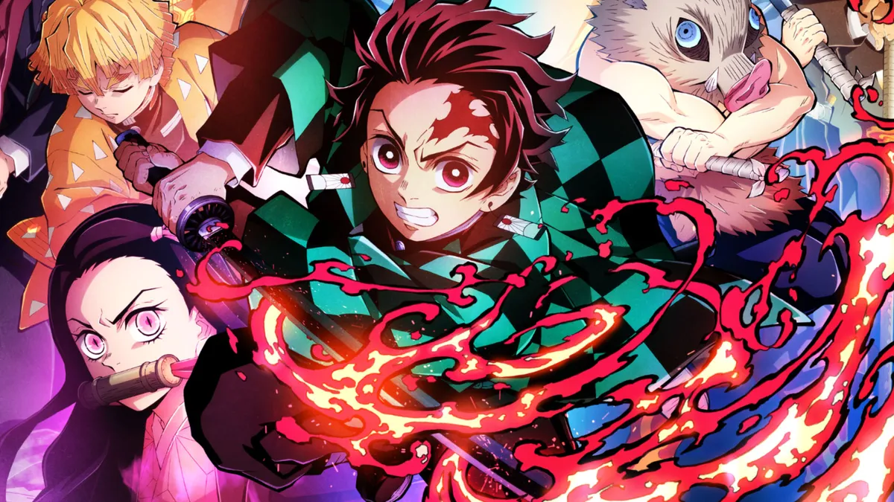
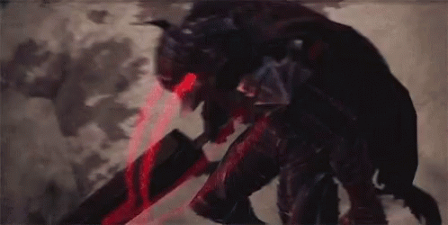
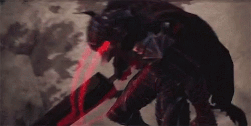

This is one of my favorite animes since the story is really entertaining and the animation really spectacular. Story's about Tanjiro, a regular demon hunter looking for transforming his demon sister back to normal.

Very similar to the last one, however, this one is about Yuji, a regular sorcerer that is looking to eat all 20 fingers of the Curse King Sukuna, to be able to contain it within him and exorcise him


Extremely good story, about a mercenary called Guts that likes to fight strong guys looking for a place to belong, after he find it, began to encounter with demons and with his superhuman strength is able to defeat them.
 
